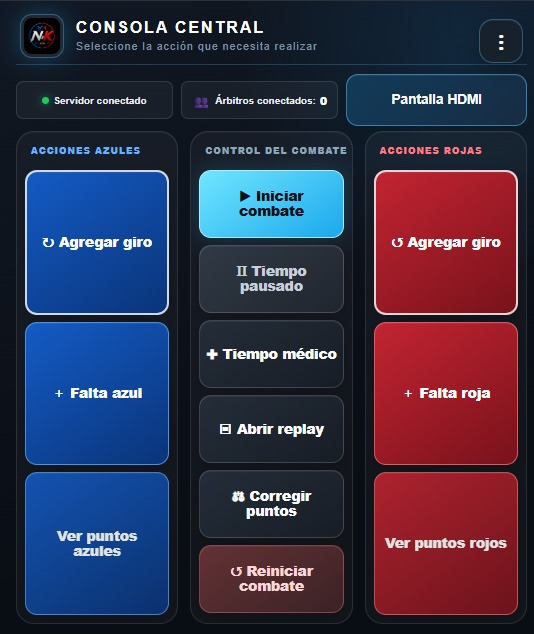
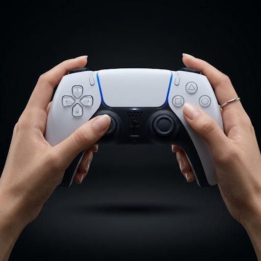
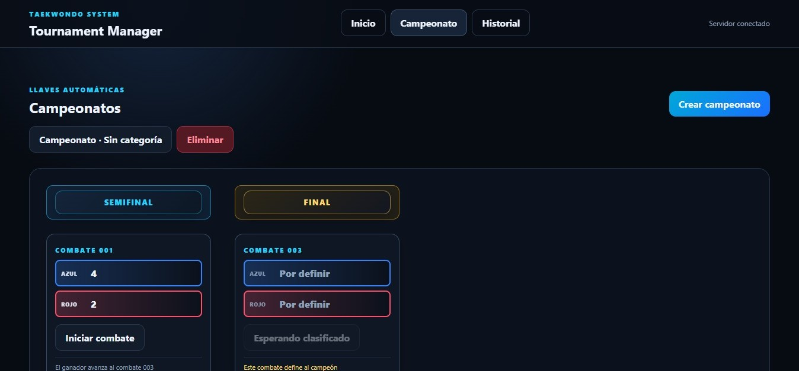
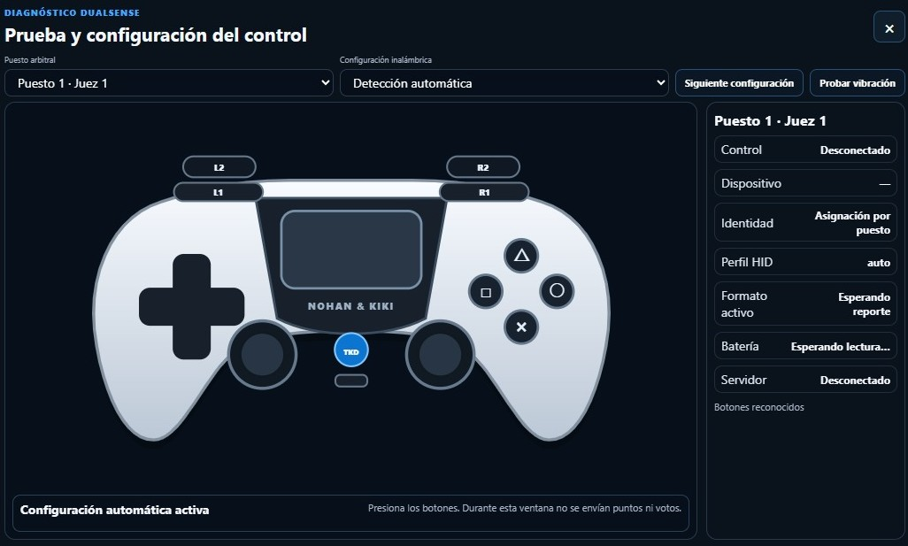

01
Marcador en tiempo real
Puntaje azul y rojo, cronómetro, round, Gam-Jeom e indicadores visuales con una lectura inmediata y limpia.

N&K Scoring reúne marcador, consola central, replay, controles, diagnóstico y gestión de torneos en una experiencia clara, profesional y pensada para competencia real.

Un sistema hecho para que el combate se entienda rápido, se opere con seguridad y se vea profesional en cada torneo.
Cada módulo fue pensado para resolver una necesidad real dentro del torneo: leer rápido, actuar rápido y mantener el control del combate sin confusión.
Puntaje azul y rojo, cronómetro, round, Gam-Jeom e indicadores visuales con una lectura inmediata y limpia.
Inicia el combate, pausa, corrige puntos, aplica faltas, abre replay y controla las acciones principales desde una sola pantalla.

Opera el sistema con control físico o desde el teléfono. El acceso móvil puede compartirse por QR y facilita la operación en mesa.


Crea campeonatos, organiza categorías, maneja BYE y sigue el avance automático de cada llave hasta la final.

Revise acciones del combate cuando haga falta y compruebe controles antes del torneo con la app de diagnóstico y configuración.

Desde encender el servidor hasta configurar botones y abrir el siguiente combate, todo forma parte de una misma experiencia.


El manual de usuario estará disponible pronto.
Archivo incluido dentro del sitio para que el cliente lo descargue directamente desde la página oficial.
N&K Scoring nació del trabajo de Nohan y Kiki, y de una necesidad muy real: en competencia hacía falta una forma más clara y más moderna de controlar el combate.
Queríamos una herramienta que se sintiera humana al usarla: simple al operar, firme bajo presión y pensada para el taekwondo real.Conocer nuestra historia →
Por ahora, N&K Pro está disponible por mes. N&K Event y Organization se anunciarán próximamente cuando sus condiciones estén definidas.
Ver planes y preciosSolicita información, una demostración o detalles sobre licencias desde nuestras redes oficiales.
Instagram@nkscoring Facebook@nkscoring